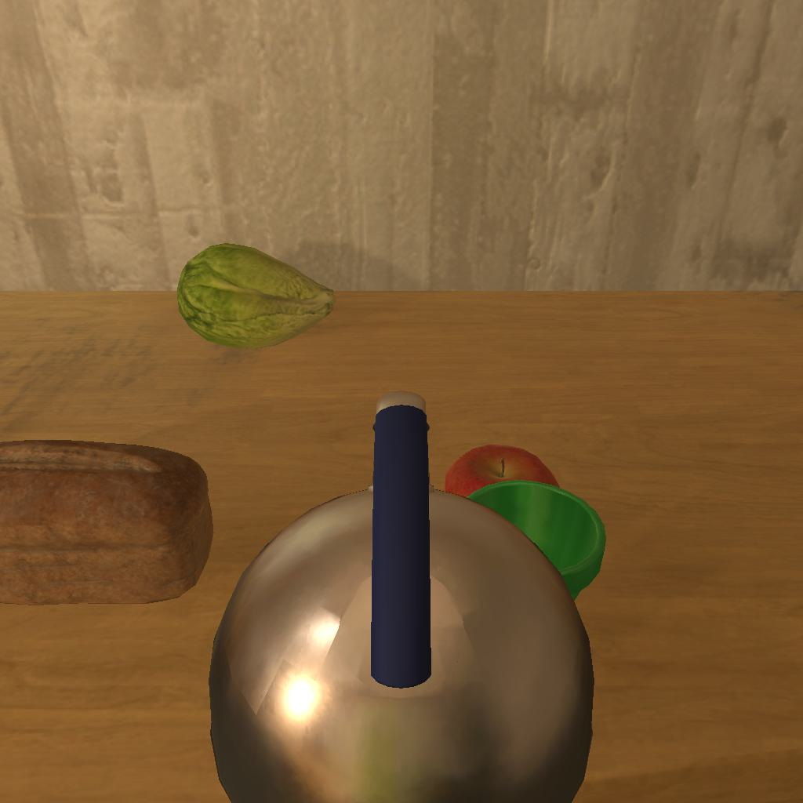

---------------------------------------------------------task: 26---------------------------------------------------------
--------------------------------------------------------------------------------------------------------------------------------------------------------------------
--------------------------------------------------------------------------------------------------------------------------------------------------------------------
Step:--------------------------------------------------------------------------17-------------------------------------------------------------------------------
----------------------------------------
VLM Prompt:
Image1:
Image2:
Image3:
**Instruction**
1. Analyze the provided images to identify all visible household objects and compare the difference between images (e.h. whether the object is opened or not and taken on hand or not), focusing on those relevant to the task description "find two kettle and put them in cabinet."
2. Use the analysis of images and the task hint "The agent must find an object of the desired type, pick it up, find the correct location to place it, put it down there, then look for another object of the desired type, pick it up, return to previous location, and put it down there with the other object." to answer the question: what is the most reasonable action in the choices for the task description "find two kettle and put them in cabinet"?
3. Decide and write the answer using the template: The answer is: (i): , where i is the real number. If there is no desired object in images, search every place based on **Initial Observation** to find the object. And if no one is exactly correct, choose a similar answer.
**Initial Observation**
You are in the middle of a room. Looking quickly around you, you can see countertop (1), coffeemachine (1), cabinet (1-4), drawer (1-8), sink (1), sinkbasin (1), garbagecan (1), fridge (1), microwave (1), dresser (1), sidetable (1)
**Answer Choices**
(1): go to coffeemachine 1
(2): go to cabinet 1
(3): go to cabinet 2
(4): go to drawer 1
(5): go to sink 1
(6): go to sinkbasin 1
(7): go to cabinet 3
(8): go to garbagecan 1
(9): go to cabinet 4
(10): go to drawer 2
(11): go to fridge 1
(12): go to microwave 1
(13): go to dresser 1
(14): go to sidetable 1
(15): go to drawer 3
(16): go to drawer 4
(17): go to drawer 5
(18): go to drawer 6
(19): go to drawer 7
(20): go to drawer 8
(21): put kettle 1 in/on countertop 1
(22): examine countertop 1
**Answer**
Let's think step by step by following the instructions.
----------------------------------------
----------------------------------------
Original Response:
Firstly, we need to analyze the images provided. In all three images, we can see a kettle on the countertop with a blue handle, a loaf of bread, a green apple, a red apple, a green bowl, and a head of lettuce. There are no differences between the images in terms of objects being opened or taken in hand.
Next, according to the task description "find two kettles and put them in the cabinet," we need to find another kettle. None of the answer choices directly mention finding a kettle, so we must search every place based on the Initial Observation to find the object.
Considering the Initial Observation, kettles are usually found in cabinets or on countertops. Since we already have one kettle on the countertop and none of the choices mention another countertop, we should check the cabinets.
The most reasonable action from the answer choices for the task description, based on the Initial Observation, would be to check the cabinets where a kettle might be stored.
The answer is: (2): go to cabinet 1. If there is no kettle in cabinet 1, the agent should continue to search the remaining cabinets (3, 4) and other locations where a kettle might be found based on the Initial Observation.
----------------------------------------
----------------------------------------
>>> Refine Original VLM Response and Get Pure Action: go to cabinet 1
----------------------------------------
-----------------------------------------------------------------
Running time: 18.978703498840332 seconds
Total Money: 16.682099999999995
-----------------------------------------------------------------
-----------------------------------------------------------------
Text Observation:You arrive at loc 2. The cabinet 1 is open. On the cabinet 1, you see a plate 1, a mug 1, a dishsponge 1, and a tomato 1.
-----------------------------------------------------------------
UNSUCCEED